건축산업기사 (2003-05-25 기출문제)
1과목: 건축계획
1. 상점의 외관 형태에 관한 기술중 부적당한 것은?
- 홀형은 만입형의 만입부를 더욱 넓게 계획하고, 그 주위에 진열장을 설치함으로써 홀을 형성하는 형식으로 상점안의 면적이 작아진다.
- 돌출형은 종래에 많이 사용된 형식으로 특수 도매상 등에 쓰인다.
- 평형은 가장 일반적인 형식으로 채광이 용이하고 상점 내부를 넓게 사용할 수 있다.
- 만입형은 점두의 일부를 상점안으로 후퇴시킨 것으로 자연채광에 효과적인 방법이다.
(정답률: 46%)

2. 렌터블 비(rentable ratio)가 75%이고, 대실면적이 6000m2인 사무소의 연면적은 얼마인가?
- 4500m2
- 6000m2
- 8000m2
- 1⑤00m2
(정답률: 알수없음)
3. 하나의 주거단위가 복층형식을 취하는 메조넷형(Maisonette Type)에 대한 설명 중 옳지 않은 것은?
- 주택내의 공간의 변화가 있다.
- 거주성, 특히 프라이버시가 좋다.
- 면적면에서 소규모 주택에 유리하다.
- 양면개구에 의한 일조, 통풍 및 전망이 좋다.
(정답률: 알수없음)
4. 다음 노인실 계획에 관한 내용중 적합하지 않은 것은?
- 식당, 욕실 및 화장실에 가까운 곳이 좋다.
- 일조가 충분하고 전망 좋은 곳에 면하도록 한다.
- 정신적 안정과 보건에 유의해야 한다.
- 노인방은 조용하여야 하므로 가장 은밀한 곳에 배치한다.
(정답률: 100%)
5. 일반적인 단독주택의 설계에서 각실의 면적비율로 적당하지 않은 것은?
- 부엌 : 주택 연면적의 약 8 ∼ 12%
- 거실 : 주택 연면적의 약 20%
- 복도 : 주택 연면적의 약 10%
- 현관(홀): 주택 연면적의 약 7%
(정답률: 알수없음)
6. 한국 전통 서민주택중 개성지방의 서민주택 평면은 다음 그림중 어느 것인가?
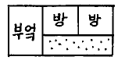
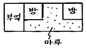
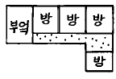
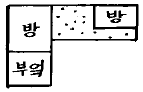
(정답률: 16%)
7. 독립성을 위주로 아파트를 설계할 때 다음 형식중 가장 유리한 것은?
- 편복도형
- 중복도형
- 홀형
- 집중형
(정답률: 58%)
8. 사무소 건축계획에서 개방식 배치(open floor plan)의 장점에 관한 기술중 옳지 않은 것은?
- 전면적을 유용하게 이용할 수 있다.
- 소음이 적고 독립성이 있다.
- 자연채광에 보조채광으로서의 인공채광이 필요하다.
- 방의 길이나 깊이의 변화를 줄 수 있다.
(정답률: 알수없음)
9. 상점 건축물의 매장 가구배치상 고려해야 할 점이 아닌것은?
- 손님쪽에서 상품이 효과적으로 보이도록 한다.
- 감시하기 쉽고 손님에게 감시한다는 인상을 주지 않게 한다.
- 동선이 원활하여 다수의 손님을 수용하고 소수의 종업원으로 관리하게 한다.
- 들어오는 손님과 종업원의 시선이 직접 마주치게 하여 친근감을 갖게 한다.
(정답률: 59%)
10. 초등학교 단층교사가 2층 이상의 교사에 비해 갖는 잇점으로 부적당한 것은 다음 중 어느 것인가?
- 학습활동을 실외에 연장시킬 수 있다.
- 채광 및 환기가 유리하다.
- 부지의 이용률이 높다.
- 계단을 오르내릴 필요가 없으므로 재해발생시 피난상 유리하다.
(정답률: 60%)
11. 학교 운영 방식중 플라툰형(Platoon type)의 특성으로 부적당한 것은?
- 교과 담임제와 학급 담임제가 병용된다.
- 교사의 수와 적당한 시설이 없으면 실시가 곤란하다.
- 동선계획과 시간표 작성이 용이하다.
- 전학급을 2개의 집단으로 나누어 한쪽이 일반교실을 사용할 때 다른 쪽은 특별교실을 사용한다.
(정답률: 42%)
12. 실내공기를 오염시키는 물질 가운데 부유입자와 에어졸을 일정량 이하로 억제하여 유해가스, 금속이온 등이 그 실의 사용목적에 따라 관리되고 있는 실은?
- 린넨룸
- 클린룸
- 팬트리
- 드라이에리어
(정답률: 알수없음)
13. 사무소 건축의 코어(core) 내에 포함되지 않는 공간은?
- 복도
- 엘리베이터 홀
- 공조실
- 화장실
(정답률: 17%)
14. 주택의 각 실 공간계획에 대한 설명중 가장 옳지 않은 것은?
- 거실이 통로로서 사용되는 평면배치는 피한다.
- 식사실은 가족수 및 식탁배치에 따라 크기가 결정된다.
- 부엌은 밝고, 관리가 용이한 곳에 위치시킨다.
- 부부침실은 주간 생활을 위하여 아동침실에 비해 밝고, 전망 좋은 곳에 위치시킨다.
(정답률: 50%)
15. 공장건축의 일반설비사항으로 가장 거리가 먼 것은?
- 조명은 위치를 자유롭게 할 수 있는 인공조명을 주로 사용하는 것이 좋다.
- 환기의 표준으로는 1시간에 6회 내지 7회 정도가 좋으며, 환기방법으로는 자연환기와 기계환기가 있다.
- 강공업(鋼工業)에 속하는 작업장에는 그 자체가 난방이 되어 난방시설이 필요하지 않다.
- 욕실설비는 중층공장의 경우에는 1층에 배치하는 것이 좋다.
(정답률: 16%)
16. 학교의 교사배치형식중 폐쇄형에 관한 다음의 내용 중 맞지 않는 것은?
- 교사주변의 공지활용도가 높기 때문에 활용되지 않는 부분이 거의 없다.
- 별도의 피난통로를 만들지 않으면 화재 및 비상시에 불리하다.
- 부지를 효율적으로 활용하면서 건축할 수 있다.
- 일조, 통풍 등의 환경적 조건이 불리하다.
(정답률: 20%)
17. 상점건축에서 파사드(facade)와 숍 프론트(shop front)의 조건이 아닌 것은?
- 해당 상점의 업종이 인지될 수 있도록 한다.
- 상점내로 유도하는 효과가 있어야 한다.
- 셔터는 폐점후 방범만을 목적으로 하기 때문에 시각적인 고려는 할 필요가 없다.
- 대중적 호감을 고려한다.
(정답률: 알수없음)
18. 오피스 랜드스케핑(office landscaping)에 관한 기술 중 옳지 않은 것은?
- 창이나 기둥의 방향과 관계없이 실내의 구성이 가능하다.
- 배치를 의사전달과 작업흐름의 실제적 패턴에 기초를 둔다.
- 바닥을 카펫으로 깔고, 천장에 방음장치를 하는 등의 소음대책이 필요하다.
- 실내에 고정된 칸막이나 반고정된 칸막이를 사용하도록 한다.
(정답률: 알수없음)
19. 공동주택 주거단위의 평면형에서 L· D + K 형식이란 다음 중 어느 것인가?
- 거실과 부엌을 겸용으로 사용하고 식당이 별도로 있다.
- 부엌과 식당을 한 공간에서 사용하고 거실이 따로 있다.
- 거실과 식당을 같이 사용하고 부엌을 따로 사용한다.
- 부엌과 거실, 식당을 모두 겸용하는 형태이다.
(정답률: 39%)
20. 상점의 판매방식중 측면판매에 관한 설명으로 옳지 않은 것은?
- 고객과 종업원이 진열상품을 같은 방향으로 보며 판매하는 방식이다.
- 충동적 구매와 선택이 용이하다.
- 판매원의 정위치를 정하기 어렵고 불안정하다.
- 진열면적이 감소하고 상품에 친근감이 간다.
(정답률: 55%)
2과목: 건축시공
21. 철근콘크리트의 보를 배근할 때 그 주근의 이음이 가장 적당한 곳은?
- 보의 단부지점
- 인장력이 가장 작은 곳
- 보의 중간지점
- 압축력이 가장 큰 곳
(정답률: 알수없음)
22. 건축공사의 시공속도에 관한 설명 중 부적당한 것은?
- 공사속도를 빠르게 할수록 직접비는 감소한다.
- 급작공사를 강행할수록 공사의 질은 조잡해진다.
- 매일 공사량은 손익분기점 이상의 공사량을 실시하는 것이 채산되는 시공속도이다.
- 시공속도는 간접비와 직접비의 합계가 최소로 되도록 하는 것이 가장 경제적이다.
(정답률: 알수없음)
23. 유리판 사이에 철선망을 넣은 것으로 방화 또는 진동이 심한 장소에 많이 쓰이는 유리는?
- 연마유리
- 망입유리
- 안전유리
- 판유리
(정답률: 64%)
24. 거푸집의 조립순서가 바른 것은?
- 기초→ 기둥→ 내벽→ 큰보→ 작은보→ 바닥→ 외벽
- 기초→ 기둥→ 큰보→ 작은보→ 내벽→ 바닥→ 외벽
- 기초→ 기둥→ 큰보→ 작은보→ 외벽→ 바닥→ 내벽
- 기초→ 기둥→ 내벽→ 바닥→ 큰보→ 작은보→ 외벽
(정답률: 34%)
25. 함자물쇠 손잡이의 높이는 보통 바닥에서 어느 정도의 높이로 하여야 하는가?
- 70㎝
- 90㎝
- 110㎝
- 130㎝
(정답률: 알수없음)
26. 철근콘크리트의 설명 중 옳은 것은?
- 철근과 콘크리트는 선팽창 계수가 거의 같다.
- 형태의 변경이나 파괴, 철거가 용이하다.
- 콘크리트는 산성으로 알칼리성인 철근의 부식을 방지한다.
- 철근은 압축력을, 콘크리트는 인장력을 부담한다.
(정답률: 알수없음)
27. 지반조사법에서 지하탐사법에 속하지 않는 것은?
- 터파보기
- 탐사간
- 철관박아넣기
- 물리적지하탐사
(정답률: 10%)
28. 목구조의 접합부에 관한 설명으로 옳은 것은?
- 접합부의 강도는 부재의 강도보다 작아야 한다.
- 부재의 접합은 응력이 작은 곳에 둔다.
- 이음 및 맞춤의 단면은 응력방향에 수평되게 한다.
- 볼트 접합이 못 접합보다는 접합부의 강성이 크다.
(정답률: 47%)
29. 방수공사에 관한 기술 중 옳지 않은 것은?
- 방수모르타르는 보통 모르타르에 비해 접착력이 부족한 편이다.
- 시멘트 액체방수는 면적이 넓은 경우 익스팬션조인트를 반드시 설치해야 한다.
- 아스팔트 방수층은 바닥, 벽 모든 부분의 방수층 보호누름을 해야한다.
- 스트레이트 아스팔트의 경우 신축이 좋고, 내구력이 좋아 옥외방수에도 사용 가능하다.
(정답률: 알수없음)
30. 바깥 방수공법에 대한 설명 중 부적당한 것은?
- 바닥방수는 밑창콘크리트를 한 후 방수공사를 한다.
- 벽체방수는 밑바탕의 벽체를 축조하고 외부에 방수 공사를 한다.
- 벽체방수시 보호누름이 필요하다.
- 안방수공법에 비해 공기 및 시공면에서 유리하다.
(정답률: 47%)
31. 페인트 도장에 있어서 건조제를 지나치게 많이 넣었을 때의 정벌칠 결과에 대한 기술 중 옳은 것은?
- 도막에 균열이 생긴다.
- 광택이 생긴다.
- 내구력이 증대한다.
- 접착력이 증가한다.
(정답률: 알수없음)
32. 타일의 크기가 10.8cm × 10.8cm이고, 가로 세로 줄눈의 크기는 6mm 일 때, 1m2를 시공할 타일의 정미수량은 몇매인가?
- 95매
- 85매
- 78매
- 77매
(정답률: 47%)
33. 다음 중 직접비에 해당하는 항목은?
- 일반가설비
- 가설손료
- 재료비
- 일반관리비
(정답률: 70%)
34. 거푸집 철거시 지주바꾸어 세우기 순서 중 제일 먼저 실시하여야 하는 것은?
- 큰보
- 작은보
- 바닥판
- 계단
(정답률: 37%)
35. 콘크리트 배합을 결정할 때 그 순서에 맞는 것은?
- 배합강도→ 시멘트강도→ 물· 시멘트비→ 슬럼프→ 표준배합
- 물· 시멘트비→ 시멘트강도→ 슬럼프→ 표준배합→ 배합강도
- 배합강도→ 슬럼프→ 물· 시멘트비→ 표준배합→ 배합강도
- 슬럼프→ 시멘트강도→ 물· 시멘트비→ 표준강도→ 배합강도
(정답률: 18%)
36. 대지 주위의 흙파기면에 따라 널말뚝을 박은 다음 널말뚝 주변부의 흙을 남겨 가면서 중앙부의 흙을 파고 그 부분에 기초 또는 지하 구조체를 축조한 다음 이를 지점으로 흙막이 버팀대로 경사지게 가설하여 널말뚝 주변부의 흙을 파내는 흙막이 공법은?
- 오픈 컷 공법
- 트렌치 컷 공법
- 어스앵커 공법
- 아일랜드 공법
(정답률: 19%)
37. 기초공사에서 기초의 형식에 의한 분류와 가장 거리가 먼 것은?
- 온통기초
- 복합기초
- 연속기초
- 잠함기초
(정답률: 알수없음)
38. 미장공법 중 균열이 가장 적게 생기는 것은?
- 회반죽 바름
- 소석고 플라스터 바름
- 경석고 플라스터 바름
- 마그네시아 시멘트 바름
(정답률: 50%)
39. 벽돌(조적)조 벽체의 강도에 영향을 미치는 사항으로 가장 거리가 먼 것은?
- 벽돌의 결함
- 모르타르의 접착강도
- 벽돌의 인장강도
- 시공 정밀도
(정답률: 알수없음)
40. 지명경쟁입찰을 선택하는 가장 중요한 이유는?
- 양질의 시공결과 기대
- 공사비의 절감
- 준공기일의 단축
- 공사감리의 관리
(정답률: 100%)
3과목: 건축구조
41. 철근콘크리트 기둥에서 띠철근(Hoop)을 넣는 가장 큰 이유는?
- 주근의 좌굴방지
- 콘크리트의 부착력 증대
- 압축강도 증가
- 수축변형 방지
(정답률: 67%)
42. 철근을 소요 두께의 콘크리트로 덮는 이유로 가장 부적합한 것은?
- 철근이 산화하지 않도록 하기 위해서
- 부착력을 확보하기 위하여
- 내화적으로 만들기 위하여
- 철근의 위치를 정확히 확보하기 위하여
(정답률: 42%)
43. 그림에서 반력 Rc가 0 이 되려면 B점의 집중하중 P는 몇tf인가?
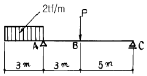
- 3tf
- 6tf
- 9tf
- 12tf
(정답률: 8%)
44. 철골구조에서 보의 플랜지에 커버플레이트(cover plate)를 사용하는 경우가 있는데 그 주된 이유는?
- 보의 좌굴을 방지하기 위함이다.
- 보의 단면계수를 크게하기 위함이다.
- 웨브재의 전단 보강을 위함이다.
- 집중하중을 분산시키기 위함이다.
(정답률: 알수없음)
45. 기초 설계에 있어 장기 50tf(자중포함)의 하중을 받을 경우 장기 허용지내력도 10tf/m2의 지반에서 적당한 기초판의 크기는?
- 1.5m x 1.5m
- 1.8m x 1.8m
- 2.0m x 2.0m
- 2.3m x 2.3m
(정답률: 알수없음)
46. 양단 고정보에서 C점의 휨모멘트는 ? (단, 보의 휨강도 EI는 일정하다.)
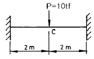
- 3.5tf.m
- 4.0tf.m
- 4.5tf.m
- 5.0tf.m
(정답률: 30%)
47. 그림과 같은 기둥의 단면(斷面)이 15 x 15㎝일 경우 이 기둥의 오일러(Euler) 좌굴하중으로 적당한 것은 ? (단, 탄성계수 E = 8 x 104㎏f/㎝2)
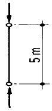
- 13.3tf
- 15.4tf
- 17.6tf
- 19.8tf
(정답률: 알수없음)
48. 기초말뚝 상호간의 최소간격의 기준으로 옳지 않은 것은?
- 나무말뚝 간격은 60㎝ 이상
- 기성 콘크리트말뚝 간격은 75㎝ 이상
- 제자리 콘크리트말뚝 간격은 100㎝ 이상
- 말뚝 끝마무리 지름의 2.5배 이상
(정답률: 알수없음)
49. 강도설계법에서 직사각형 복근보를 건물에 사용시 콘크리트가 부담하는 전단강도 ø Vc는 ? ( 단, fck=350 kgf/cm2, fy=4000 kgf/cm2)
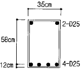
- 17.1 tonf
- 11.1 tonf
- 9.1 tonf
- 7.1 tonf
(정답률: 알수없음)
50. 철근콘크리트 단순보가 그림과 같이 균열되었다. 균열을 방지하는 방법 중 옳은 것은?
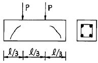
- 인장철근량을 증가시킨다.
- 압축철근량을 증가시킨다.
- 철근의 갈구리를 크게한다.
- 스터럽을 증가시킨다.
(정답률: 알수없음)
51. 철골 기둥의 주각부분 고정과 관련 없는 것은?
- 톱 앵글(Top Angle)
- 클립 앵글(Clip Angle)
- 윙 플레이트(Wing Plate)
- 베이스 플레이트(Base Plate)
(정답률: 알수없음)
52. 주변 고정인 직사각형 철근콘크리트 슬래브에서 각방향의 하중 분담에 대한 설명 중 옳은 것은?
- 장변방향에 하중을 많이 분담시킨다.
- 단변방향에 하중을 많이 분담시킨다.
- 장변과 단변에 균등하게 분담시킨다.
- 분담비율을 임의로 가정하여 분담시킨다.
(정답률: 알수없음)
53. 그림과 같은 장주의 좌굴길이를 옳게 표시한 것은 ? 단, 기둥의 재질과 단면크기는 모두 같다.
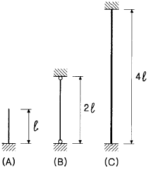
- (A)가 최대이고, (B)가 최소이다.
- (C)가 최대이고, (A)가 최소이다.
- (B)가 최대이고, (A)와 (C)는 같다.
- (A), (B), (C) 모두 같다.
(정답률: 알수없음)
54. 조적조 내력벽에 관한 설명이다. 옳은 것은?
- 벽길이는 10m 이하로 하고 내력벽으로 둘러싸인 부분의 바닥 면적은 60m2를 넘을수 없다.
- 벽길이는 8m 이하로 하고 내력벽으로 둘러싸인 부분의 바닥 면적은 80m2를 넘을수 없다.
- 벽길이는 10m 이하로 하고 내력벽으로 둘러싸인 부분의 바닥 면적은 80m2를 넘을수 없다.
- 벽길이는 8m 이하로 하고 내력벽으로 둘러싸인 부분의 바닥 면적은 60m2를 넘을수 없다.
(정답률: 20%)
55. 그림과 같은 도형의 x, y축에 대한 단면 1차 모멘트는?
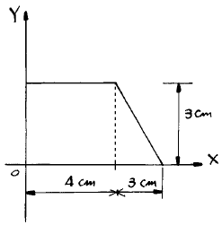
- Gx = 20.5㎝3
Gy = 44.5㎝3 - Gx = 22.5㎝3
Gy = 46.5㎝3 - Gx = 22.5㎝3
Gy = 44.5㎝3 - Gx = 20.5㎝3
Gy = 46.5㎝3
(정답률: 알수없음)
56. 강도설계법에서 콘크리트의 변형률이 얼마에 도달하면 그 부재의 하중부담 한계로 간주하는가?
- 0.001
- 0.002
- 0.0025
- 0.003
(정답률: 12%)
57. 그림과 같이 하중을 받고있는 트러스에서 A - B부재의 부재력으로 옳은것은?
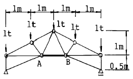
- 2t(인장력)
- -2t(압축력)
- 5t(인장력)
- -5t(압축력)
(정답률: 알수없음)
58. 다음 지붕잇기 재료중 물매의 최소한도가 가장 큰 것은?
- 소형슬레이트
- 골슬레이트
- 평기와
- 아스팔트 루핑
(정답률: 알수없음)
59. 단변방향의 순경간 6m, 장변방향 순경간 8m 인 4변고정 슬래브에서 굽힘철근의 단부로부터의 굽힘 위치는?
- 단변방향 100㎝, 장변방향 100㎝
- 단변방향 100㎝, 장변방향 150㎝
- 단변방향 150㎝, 장변방향 150㎝
- 단변방향 150㎝, 장변방향 200㎝
(정답률: 25%)
60. 강도설계법에서 균형단면의 직사각형보가 fck=210kgf/cm2, fy=3000kgf/cm2일 때 균형철근비 ρ b 값은? (단,Es=2.0x106kgf/cm2)
- 2.45%
- 2.95%
- 3.37%
- 3.95%
(정답률: 31%)
4과목: 건축설비
61. 제 4과목: 건축설비 증기보일러에서 하트포드(hartford)배관을 하는 주요 이유는?
- 안전수위(水位)의 유지
- 최저압력(壓力)의 유지
- 에너지의 절약
- 배관의 간략화
(정답률: 55%)
62. 대류 방열기라고도 하며 철판제 케비넷 속의 플레이트 핀(Plate Fin)이라는 열교환기에 접촉하는 공기의 대류 작용에 의해 실내 공기의 온도를 상승시키는 것은?
- 콘벡터(convector)
- 벽걸이형 라디에타
- 강판제 라디에타
- 온기로(溫氣盧)
(정답률: 알수없음)
63. 난방부하 계산시 방위에 따른 손실을 보정하는데 그 값을 가장 많이 보정해야하는 방위는?
- 동
- 서
- 남
- 북
(정답률: 40%)
64. 명시조명의 적용과 관계가 가장 먼 곳은?
- 학교
- 사무실
- 공장
- 음식점
(정답률: 알수없음)
65. 보일러에 경수를 사용할 경우 나타나는 현상 중 옳지 않은 것은?
- 보일러 내면에 스케일이 낀다.
- 열전도율이 저하된다.
- 연관 및 황동관을 침식시킨다.
- 과열의 원인이 된다.
(정답률: 15%)
66. 화약공장에 적당한 조명기구는?
- 방폭형
- 방수형
- 방습형
- 방전형
(정답률: 36%)
67. 급수배관 방식에서 잘못 설명된 것은?
- 기구류의 수격작용을 방지할 수 있도록 고려해야한다
- 하향 급수관은 최상층의 천정에 은폐 배관된 수평주관에 연결된다.
- 혼용급수배관법은 1,2층은 하향식, 3층 이상은 고가 수조에서 상향식으로 배관하는 방식이다.
- 상향 급수식은 수평주관을 지하층 천장에 노출 배관 하므로 점검 수리등이 편리하다.
(정답률: 알수없음)
68. 다음중 증기난방에만 쓰이는 부속품은?
- 라디에터 밸브
- 라디에터 트랩
- 감압밸브
- 공기밸브
(정답률: 0%)
69. 배수관의 설명중 옳지 않는 것은?
- 배수관의 관경이 크면 클수록 오히려 배수 능률은 감퇴될 수 있다.
- 배수관의 점검 수리를 위해 필요한 곳에는 청소구를 설치한다.
- 배관의 물매와 배수관내의 자기세정과는 무관하다.
- 빗물수직관에 다른 배수관을 연결하여서는 안된다.
(정답률: 55%)
70. 회로의 부하 상태에 의하여 자동적으로 작동한 후 원상태로 복귀가 가능한 개폐기는?
- 나이프 스위치
- 서킷 브레이커
- 컷 아웃 스위치
- 보턴 스위치
(정답률: 19%)
71. 분전반에 대한 설명중에서 옳지 않은 기술은?
- 분전반은 주개폐기, 분기개폐기 및 자동차단기를 모아서 설치한 것이다.
- 분기회로용 개폐기는 나이프 스위치나 노퓨즈 브레이커 등이 사용된다.
- 1개의 분전반에 넣을수 있는 분기 개폐기의 수는 예비회로를 포함하여 40회로 이하로 한다.
- 일반적으로 1층에 분전반은 1개씩 설치하고 분기회로의 길이는 50m 이상이 되도록 정하는 것이 좋다.
(정답률: 0%)
72. 인터폰설비 중 접속방식에 따른 분류가 아닌 것은?
- 프레스토크식
- 모자식
- 복합식
- 상호식
(정답률: 알수없음)
73. 연면적이 2000m2의 사무소에서 다음과 같은 조건이 있을 때 사무소에서 필요한 1일의 급수량(사용수량)은 ? (단, 유효 면적 56%, 거주인원 0.2인/m2, 1인 1일 당 사용수량 120ℓ /d)
- 3.36m3/d
- 4.36m3/d
- 26.88m3/d
- 40.68m3/d
(정답률: 31%)
74. 벽걸이형 인터폰의 설치 높이는 바닥면 위로 얼마 정도가 좋은가?
- 0.9m
- 1m
- 1.5m
- 1.7m
(정답률: 84%)
75. 난방 부하 계산에 일반적으로 필요치 않은 사항은?
- 구조체를 통한 손실 열량
- 환기에 의한 손실 열량
- 틈새 바람에 의한 손실 열량
- 재실 인원에 따른 발열량
(정답률: 34%)
76. 10cm 두께의 콘크리트 벽 양쪽 표면의 온도가 각각 5 ℃, 15℃ 로 일정할 때, 벽을 통과하는 열량은 ? (콘크리트의 열전도율= 1.4 kcal/m· h· ℃)
- 140 kcal/m2· h
- 14 kcal/m2· h
- 100 kcal/m2· h
- 10 kcal/m2· h
(정답률: 25%)
77. 소화설비 중 스프링클러(sprinkler) 설비에 대한 특징으로 옳지 않은 것은?
- 고층 건축물이나 지하층의 소화에 적합하다.
- 소화기능은 있으나 경보기능은 없다.
- 화재시 초기 소화율이 높다.
- 물로 인한 2차 피해가 발생할 수 있다.
(정답률: 65%)
78. 건축설비 도면 기호중 옳지 않은 것은?
 급수관
급수관 스트레이너
스트레이너 체크밸브
체크밸브 글로브밸브
글로브밸브
(정답률: 10%)
79. 급수배관이나 기구 구조의 불비(不備), 불량(不良)의 결과 급수관 내에 오수가 역류해서 상수를 오염시키는 현상은?
- 사이어미즈 컨넥션
- 헤더
- 크로스 컨넥션
- 드레인
(정답률: 25%)
80. 피뢰침 설비공사 중 1조의 인하도선에 2개 이상의 접지극(接地極)을 병열로 접속할 경우 상호의 거리는 얼마 이상 떨어져야 하는가?
- 2m
- 4m
- 6m
- 8m
(정답률: 알수없음)
5과목: 건축관계법규
81. 노외주차장의 구조 및 설비기준이다. 부적합한 것은?
- 노외주차장의 출입구의 너비는 3.5m 이상으로 하여야 하며, 주차대수규모가 50대 이상인 경우에는 출구와 입구를 분리하거나 너비 5.5m 이상의 출입구를 설치하여 소통이 원활하도록 하여야 한다.
- 노외주차장의 주차에 사용되는 부분의 높이는 주차바닥면으로부터 2.1m 이상으로 하여야 한다.
- 자주식주차장으로서 지하식 또는 건축물식에 의한 노외주차장에는 바닥으로부터 85㎝의 높이에 있는 지점이 평균 70럭스(lux) 이상의 조도를 유지할 수 있는 조명장치를 설치하여야 한다.
- 노외주차장에 설치하는 부대시설의 총면적은 주차장 총 시설면적의 30%를 초과하여서는 아니된다.
(정답률: 알수없음)
82. 건축법에서 사용하는 용어의 정의이다. 부적합한 것은?
- 차양· 옥외계단은 주요구조부가 아니다.
- 굴뚝· 국기게양대는 건축설비가 아니다.
- 건축물의 외부형태의 변경은 대수선이다.
- 건축물을 신축· 증축· 개축· 이전하는 것은 건축이다.
(정답률: 알수없음)
83. 승용승강기의 설치기준이 가장 완화된 것부터 강화되어 있는 것으로 나열된 건축물의 용도는?
- 공동주택 - 관람장 - 위락시설
- 공연장 - 위락시설 - 숙박시설
- 집회장 - 교육연구 및 복지시설 - 업무시설
- 교육연구 및 복지시설 - 업무시설 - 관람장
(정답률: 알수없음)
84. 농· 어업을 영위하기 위하여 건축하는 것으로 시장· 군수· 구청장에게 신고함으로써 건축허가를 받은 것으로 보는 건축물이 아닌 것은?
- 연면적의 합계가 100제곱미터 이하인 주택
- 연면적이 200제곱미터 이하인 창고
- 연면적이 400제곱미터 이하인 축사
- 연면적이 500제곱미터 이하인 작물재배사
(정답률: 10%)
85. 자치구가 아닌 구의 구청장에게 건축물의 건축,대수선 및 용도변경에 관한 권한을 위임할 수 있는 건축물의 규모는?
- 5층 이하로서 연면적이 2,000m2 이하
- 5층 이하로서 연면적이 3,000m2 이하
- 6층 이하로서 연면적이 2,000m2 이하
- 6층 이하로서 연면적이 3,000m2 이하
(정답률: 28%)
86. 대지면적에 대한 건축면적의 비율로 대지안에 건축가능한 건축면적을 산정하려면 아래의 어느 규정을 적용하여야 하는가?
- 건폐율
- 용적률
- 대지의 분할규모
- 대지안의 공지
(정답률: 40%)
87. 용도변경시 신고를 하여야 하는 대상이 아닌 것은?
- 단독주택을 교회로
- 학교를 전시장으로
- 업무시설을 여관으로
- 제1종근린생활시설을 제2종근린생활시설로
(정답률: 알수없음)
88. 공동주택의 난방설비를 개별난방방식으로 하는 경우의 기준으로 옳지 않은 것은?
- 기름보일러를 설치하는 경우에는 기름저장소를 보일러실 외의 다른 곳에 설치할 것
- 보일러실의 윗부분에는 그 면적이 1.0m2 이상인 환기 창을 설치할 것
- 보일러의 연도는 내화구조로서 공동연도로 설치할 것
- 보일러실과 거실 사이의 출입구는 그 출입구가 닫힌 경우에는 보일러가스가 거실에 들어갈 수 없는 구조로 할 것
(정답률: 30%)
89. 주차장 설치의무 면제기준에 대하여 기술한 것 중 옳지 않은 것은?
- 부설주차장의 출입구가 도심지 등의 간선도로변에 위치하게 되어 자동차교통의 혼잡을 가중시킬 우려가 있다고 인정하는 장소
- 연면적 5000m2이상의 판매 및 영업시설에 해당하지 아니하는 시설물
- 부설주차장의 주차대수 300대 이하의 규모
- 부설주차장의 설치가 곤란하다고 시장· 군수 또는 구청장이 인정하는 장소
(정답률: 알수없음)
90. 1이상의 필지의 일부를 하나의 대지로 할 수 있는 토지에 해당되지 않는 경우는?
- 사용승인을 신청하는 때에 분필할 것을 조건으로 하여 건축허가를 하는 경우 그 분필대상이 되는 부분의 토지
- 농지전용허가를 받은 경우 그 허가받은 부분의 토지
- 산림형질변경허가를 받은 경우 그 허가받은 부분의 토지
- 도로의 지표하에 건축하는 건축물의 경우에 시장· 군수 · 구청장이 정하는 토지
(정답률: 알수없음)
91. 다음중 건축설비에 관한 기술이 잘못된 것은?
- 높이 31m를 초과하는 건축물에는 비상용 승강기를 설치하여야 한다.
- 낙뢰의 우려가 있는 건축물에는 피뢰설비를 설치하되 피뢰도체의 보호각은 60° 로 해야 한다.
- 50세대 이상인 다세대주택은 건축허가 신청시 에너지 절약계획서를 제출해야 한다.
- 배연설비의 배연구는 연기감지기나 열감지기에 의하여 자동으로 열 수 있는 구조로 해야 한다.
(정답률: 20%)
92. 다음 중 노외주차장의 출구 및 입구를 설치할 수 없는 곳은?
- 유치원의 출입구로부터 25m에 있는 도로의 부분
- 종단구배가 12%인 도로
- 육교에서 10m 떨어진 도로의 부분
- 너비 6m인 도로(주차대수 100대)
(정답률: 알수없음)
93. 배연설비의 설치기준으로 옳지 않은 것은?
- 배연창의 상변과 천장 또는 반자로부터 수직거리가 0.9m 이내일 것
- 배연창의 유효면적은 1m2 이상으로서 그 면적의 합계가 당해 건축물의 바닥면적의 1/100 이상일 것
- 배연구는 연기감지기 또는 열감지기에 의하여 자동으로 열 수 있는 구조로 하되, 손으로 열고 닫지 못하도록 할 것
- 배연구는 예비전원에 의하여 열 수 있도록 할 것
(정답률: 알수없음)
94. 층수가 20층, 높이가 80m인 건축물의 높이에 대한 최대 허용오차는?
- 0.8m
- 1.0m
- 1.6m
- 2.4m
(정답률: 알수없음)
95. 건축물 내부에 설치하는 피난계단의 구조에서 건축물의 내부에서 계단실로 통하는 출입구의 유효너비는 얼마 이상이어야 하는가?
- 0.75m
- 0.9m
- 1.0m
- 1.2m
(정답률: 알수없음)
96. 주차용도와 근린생활시설이 복합된 연면적이 10,000m2인 건축물을 주차전용건축물로 인정받기 위해서는 근린생활 시설의 최대면적은 얼마로 하여야 하는가?
- 1,000m2 미만
- 2,000m2 미만
- 3,000m2 미만
- 4,000m2 미만
(정답률: 25%)
97. 시설물의 부지인근에 부설주차장을 따로 설치할 수 있는 부지인근의 범위는 당해 부지의 경계선으로부터 부설주차장의 경계선까지 직선거리로 몇 m이내이어야 하는가?
- 150m
- 300m
- 450m
- 600m
(정답률: 알수없음)
98. 옥상광장 또는 2층 이상의 층에 있는 노대 기타 이와 유사한 것의 주위에는 높이 얼마 이상의 난간을 설치하여야 하는가?(오류 신고가 접수된 문제입니다. 반드시 정답과 해설을 확인하시기 바랍니다.)
- 1.0m
- 1.1m
- 1.2m
- 1.5m
(정답률: 10%)
99. 자주식주차장으로서 지하식 또는 건축물식에 의한 노외 주차장과 기계식주차장으로서 자동차용 승강기로 주차하고자 하는 층까지 운반된 자동차가 주차구획까지 자주식으로 들어가는 노외주차장의 차로의 기준으로 옳지 않은 것은?
- 굴곡부는 자동차가 5미터 이상의 내변반경으로 회전이 가능하도록 하여야 한다.
- 경사로의 종단구배는 직선부분에서 17%를 초과하여서는 아니된다.
- 경사로의 차로너비는 직선형인 경우에는 3.6미터 이상으로 하여야 한다.
- 경사로의 노면은 이를 거친면으로 하여야 한다.
(정답률: 알수없음)
100. 건축법상의 용어 관한 설명 중 잘못된 것은?
- 층고 - 방의 바닥구조체 윗면으로부터 위층 바닥구조체의 아래면까지의 높이로 한다.
- 바닥면적 - 옥상에 설치하는 물탱크는 바닥면적의 산입에서 제외된다.
- 건축면적 - 건축물의 외벽의 중심선으로 둘러싸인 부분의 수평투영면적으로 산정한다.
- 연면적 - 하나의 건축물의 각층의 바닥면적의 합계로 한다.
(정답률: 알수없음)